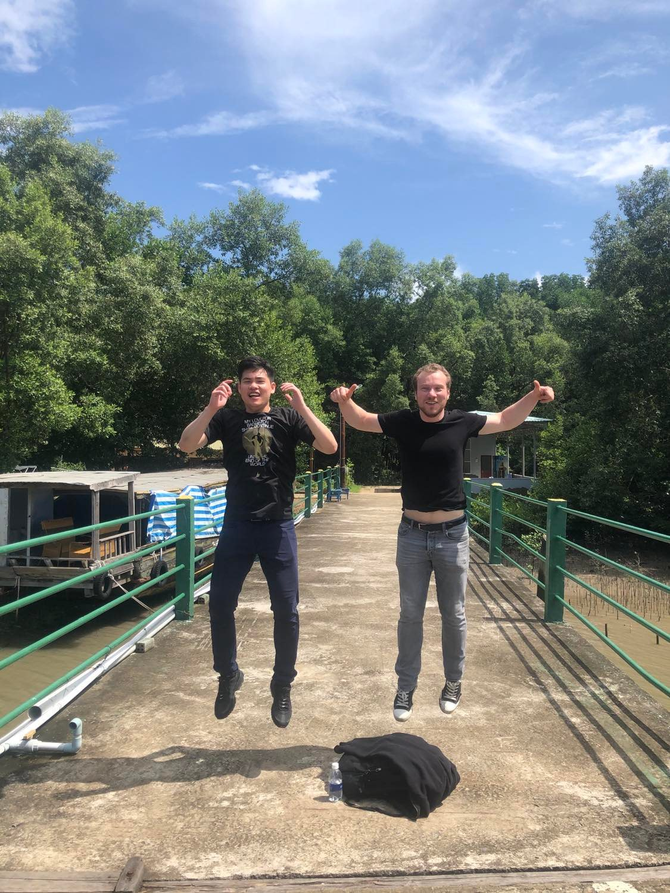

I am a software engineer and roboticist passionate about using AI to create the next generation of
intelligent robots.
I have a PhD in Robotics and experience in advanced data analytics, applied machine learning and
autonomous systems. You can check out some of my awesome work here.
I enjoy playing badminton and travel the world in my free time and is a big foodie, follow me on my
Instagram to see what I am up to.